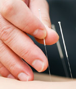

Акупунктура (иглорефлексотерапия, иглоукалывание) является популярным направлением нетрадиционной медицины, несмотря на отсутствие общепризнанных доказательств эффективности и безопасности данного метода лечения. В статье, опубликованной в Британском медицинском журнале (BMJ. 2010 Mar 18; 340: c1268), обсуждается вероятность передачи инфекций и необходимость разработки и внедрения специальных рекомендаций по инфекционному контролю при выполнении данной процедуры.

Акупунктура (иглорефлексотерапия, иглоукалывание) является популярным направлением нетрадиционной медицины, несмотря на отсутствие общепризнанных доказательств эффективности и безопасности данного метода лечения. Наиболее распространённым способом акупунктурного воздействия является традиционное иглоукалывание, при котором на биологически активные точки организма воздействуют путём введения тонких игл. Глубина введения иглы может достигать нескольких сантиметров, что представляет собой определённый риск для пациента. Одним из наиболее значимых неблагоприятных последствий проведения акупунктуры может быть инфицирование больного патогенными микроорганизмами из внешней среды или от другого пациента.
Несмотря на то, что число сообщений о случаях инфекций у пациентов, развившихся в результате иглоукалывания, невелико (в мировой литературе описано около 50 таких случаев), это может быть только «вершиной айсберга». Учитывая явную гиподиагностику таких инфекций, клиницистам следует помнить о риске передачи инфекций при иглоукалывании и выяснять такую возможность при расспросе пациента.
Неадекватная дезинфекция кожи перед проведением процедуры может привести к развитию инфекций, вызванных условно-патогенными микроорганизмами, обитающими на коже пациента или в окружающей среде. Обычно отмечаются случаи локализованных инфекций вдоль «энергетических меридианов» или в месте введения иглы.
В большинстве случаев эти инфекции отличаются благоприятным прогнозом, однако в 5-10% случаев они могут приводить к развитию тяжёлых осложнений (септический артрит, сепсис и полиорганная недостаточность, некротизирующий фасциит и др.) и даже к летальному исходу. Кроме того, в результате иглоукалывания были описаны случаи возникновения инфекционного эндокардита, менингита, эндофтальмита, спондилита, ретроперитонеального абсцесса, абсцесса брюшной полости, эмпиемы плевры.
Более 50% всех инфекций, возникающих вследствие проведения акупунктуры, вызваны Staphylococcus aureus. В 2009 г. был описан первый случай инфекции, вызванной метициллинорезистентным S. aureus (MRSA), после иглоукалывания. Кроме того, при неадекватной стерилизации игл сеансы акупунктуры могут приводить к передаче вируса гепатита В. Также нельзя исключить возможность инфицирования вирусами гепатита С и ВИЧ.
Микобактериальные инфекции, возникающие в результате иглоукалывания, были описаны уже в XXI веке. Контаминированные микобактериями тампоны с хлопковыми наконечниками, полотенца и салфетки могут приводить к быстрому размножению микобактерий в области введения игл. В результате инфицирования после длительного инкубационного периода возникают пустулы, абсцессы или язвенные поражения кожи и подкожной клетчатки.
Для предупреждения распространения инфекций при иглоукалывании необходима разработка и внедрение специальных рекомендаций по инфекционному контролю при выполнении данной процедуры, включающих использование одноразовых игл, адекватную дезинфекцию кожи и соблюдение правил асептики. Кроме того, необходимы более строгие требования к аккредитации учреждений и регулированию деятельности, связанной с выполнением иглорефлексотерапии.
Woo PC, et al.
Acupuncture transmitted infections.
BMJ. 2010 Mar 18; 340: c1268.